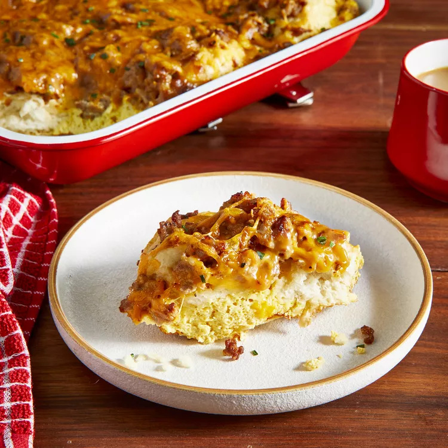

Home
Biscuits And Gravy Casserole

I got this biscuits and gravy casserole recipe at a church potluck. All the flavors blend really well. I've made it for breakfast, lunch, and dinner. So far every time I've served it, I haven't had any leftovers.
Ingredients
- cooking spray
- 1 (10 ounce) can refrigerated biscuit dough (such as Pillsbury Grands!)
- 1 (1 pound) bulk pork sausage
- 1 ½ cups shredded Cheddar cheese, divided
- 6 large eggs
- ½ cup milk
- salt and ground black pepper to taste
- 1 ½ cups cold water, or more as needed
- 1 (1.5 ounce) package pork gravy mix
Steps
- Preheat the oven to 350 degrees F (175 degrees C). Grease a 9x13-inch baking dish.
- Line the bottom of the prepared baking dish with biscuits.
- Heat a large skillet over medium-high heat. Cook and stir sausage in the hot skillet until browned and crumbly, 5 to 7 minutes; drain and discard grease. Scatter sausage over biscuit layer and top with 1 cup shredded Cheddar cheese.
- Whisk eggs, milk, salt, and pepper together in a bowl until well combined; pour over cheese layer.
- Mix water and gravy mix together in a saucepan; bring to a boil. Reduce heat and simmer until gravy is thickened, 1 to 2 minutes, adding more water for a thinner gravy. Pour gravy over egg layer. Sprinkle remaining 1/2 cup Cheddar cheese over casserole.
- Bake in the preheated oven until eggs are fluffy and cheese is bubbling, about 30 minutes.